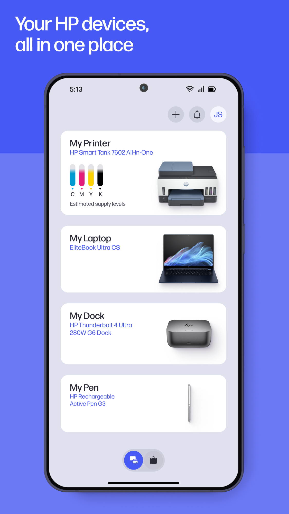
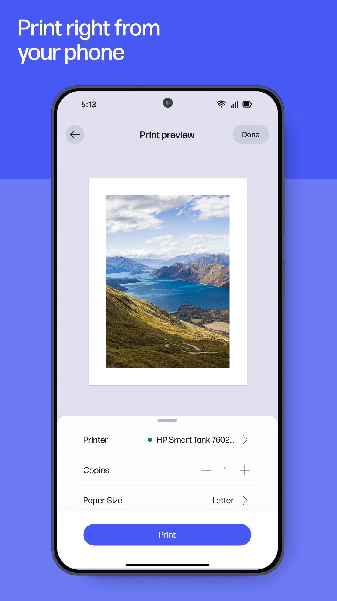

HP Smart 快问快答：从移动传真到 Instant Ink 订阅，八个问题一次说清
惠普打印机用户绕不开的一款应用——它能干什么、怎么装、传真怎么发、订阅墨盒有什么坑，整理了八个高频问题直接给答案。
整理一篇关于 HP Smart 的快问快答。如果你手上有惠普打印机，这八个问题大概率迟早会撞到，不如一次把答案看完。
HP Smart 到底是什么？
一句话答案：它是惠普硬件的移动端中枢应用，把打印机、扫描仪、传真机、墨盒订阅这些东西全揉进了一个界面。
很多人以为它就是个打印驱动的 app，去hp smart官网翻一下才会发现远不止。装完之后你会发现首页是个仪表盘：打印机状态几格墨、有没有卡纸、上次打印多少页，全在磁贴上。移动传真入口、扫描入口、墨盒商店、可打印内容库，各自占一块磁贴。它甚至能帮你远程排查打印机故障——机器出问题了，应用里的诊断工具会一步步带你做自检。

哪些人真的需要装？
惠普打印机用户必装，非惠普用户别瞎折腾。
这条划重点：HP Smart 只对自家硬件开放完整功能。你用佳能、爱普生、兄弟的打印机装它，等于白占空间。具体来说，以下几类装了最值：
- 家里或公司有惠普喷墨打印机的，尤其是支持 Instant Ink 订阅的机型
- 经常需要移动打印或移动传真的——手机里的 PDF 直接发传真，不用跑文印店
- 想远程管理打印机的——比如家里有小孩，限制打印内容或监控用量
第一次怎么装怎么配？
下载加打印机——Wi-Fi 自动搜，不行就手动输 PIN，最后注册个惠普账号。
流程大概五分钟：从官方下载或应用商店搜 HP Smart 下载打开，点「添加打印机」，它会自动扫同一 Wi-Fi 下的惠普机器。大多数情况直接搜到，点一下就配对成功。搜不到的话，打印机面板上有个 PIN 码，手动输进去也行。
配对完下一步是注册惠普账号——免费的，用邮箱就行。账号的作用是同步你的打印机配置、联系人、以及 Instant Ink 订阅。跳过注册也能临时用，但很多功能（移动传真、远程打印）会被锁死。
移动传真怎么用？
首页点传真磁贴→填收件人→选附件→发送。三个附件来源：本地文件、打印机扫描、相机现拍。
移动传真大概是 HP Smart 最被低估的功能。第一次用的界面字段看着多，其实就四步：
- 填收件人：输入对方传真号（要带国家区号），或从已存联系人里选
- 可选封面页：填主题和正文，像邮件开头那封信，常用的话存成模板
- 加附件：从手机本地选 PDF 或图片、让打印机现场扫一份、或者对着纸质文件拍一张——三个来源可混合用
- 点发送
发送有个反悔窗口：拨号画面出现后的 20～30 秒内能点取消，过了就进入正式传输流程，没法中途停。送达状态在「已发送」标签里实时推，不用守着屏幕等。

传真发不出去怎么办？
失败三步排查法：先查号码，再查对方状态，最后看自己网络。90% 的失败能在前两步解决。
失败原因排行榜第一名是发错号——区号漏了、位数不对，传真直接打到别人机器上去了。所以第一反应永远是逐位核对号码。
号码没错的话，第二个排查点是对方传真机：占线、关机、已停用都会导致失败。隔几分钟重发一次，连续失败就打电话确认一下。
对方也没问题，那才轮到你这边：Wi-Fi 波动、流量信号差、或者惠普云服务临时抖动。这时换 Wi-Fi 和 4G 各试一次，能快速区分是本机问题还是服务问题。如果看到 SFAPI 开头的错误码，那是云传真接口的代号，不是你操作错了——对照hp smart文档里的错误码排错章节查，或者直接等几分钟再试。
Instant Ink 订阅值不值得？
打印量稳定的家庭划算，打印量忽高忽低的容易踩坑。退订后订阅墨盒会停止工作，这是最大雷区。
Instant Ink 是惠普的按需墨水订阅：每月付固定费用，按你打印的页数算钱，墨水自动寄到家。好处是不用盯着墨量快见底了才急着买，坏处有两个：
一是月度未用完的页数有滚存上限，长期不打印的别指望囤一池子。打印高峰期（开学季、报税季）升一档，过后降回来，这是订阅的标准玩法。
二是全网问得最多的那条：订阅提供的墨盒和订阅绑定，退订后即使没用完也会停止工作。 机器不会废，换回普通原装或兼容墨盒就能继续用。但如果你签了长期订阅，先想清楚自己的打印量会不会突变。
试用期三个月结束自动转付费，想不续得在到期前主动取消，取消本身不额外收费——但退订后收到的那些墨盒也就跟着停了。
怎么防邻居蹭打？
三把锁：Wi-Fi 密码、打印机显示名、远程打印权限。公共网络环境尤其要设。
打印机连上 Wi-Fi 之后，同一网络里的任何人理论上都能给它发任务。合租的房子、开放办公区，蹭打不是开玩笑。惠普官方给的安全三件套：
- Wi-Fi 用强密码——打印机的安全建立在网络之上，别把打印机接进咖啡店那种免密 Wi-Fi
- 给打印机起独特的名字——「书房-HP-彩打」而不是默认的型号名，同网络多台打印机时不会发错，也不暴露机型信息
- 关掉不用的远程打印功能——Print Anywhere、HP ePrint 这些远程通道开着等于给互联网开了个小门，不用就直接在设置里关
每台惠普打印机出厂有个动态生成的唯一密码，贴在机身标签上。换室友、设备转让、发现陌生打印任务时，记得改这个密码。
有什么容易踩的坑？
三个：订阅墨盒退订即停、传真反悔窗口短、别把打印机接公共 Wi-Fi。
第一个刚说过，订阅墨盒是租用性质，跟着订阅走。第二个关于传真：拨号画面出来后只有 20～30 秒能取消，过了就进入传输流程——急着发的时候先确认号码，别等点完发送才发现错了。第三个关于安全：公共 Wi-Fi 上任何人都能给你的打印机发任务，轻则蹭打，重则可能接收到恶意文件。
值不值得长期用？
有惠普打印机的家庭和小团队值得装，尤其需要移动传真或不想操心墨水的人。非惠普用户可以省下这十几 MB。
HP Smart 不是那种装一次就再也打不开的 app——它确实把一堆零散功能整合在了一起，让你不用分别找打印驱动、传真软件、墨盒商城。代价是它和惠普生态绑定得比较紧，订阅模式也有自己的规则需要适应。但只要你的使用场景在它的覆盖范围内，这款应用能省下不少零碎的操作时间。